Mac mini M6·M5 Pro: 각주 속 대역폭과 32GB 천장
영상은 Apple이 한 주에 칩 네 개를 내놓으면서 초당 토큰 수를 한 번도 공개하지 않았다는 데서 출발해요. 사람들이 살지 말지를 정하는 숫자가 바로 그것인데요. 그래서 발표자는 Apple이 빠뜨린 계산을 등급별로 직접 해 봐요.
M6의 170GB/s에는 각주가 붙어 있어요
M6는 Apple의 첫 2나노 칩이에요. CPU(Central Processing Unit) 12코어를 슈퍼 코어 2개, 성능 코어 4개, 효율 코어 6개로 나눴고, GPU(Graphics Processing Unit) 12코어마다 Neural Accelerator가 들어갔어요. 아래 스펙표에서 맨 아래 줄을 보면 같은 M6 칩인데도 대역폭이 153GB/s와 170GB/s로 갈려요. 오른쪽 끝 M5 Pro는 307GB/s예요.
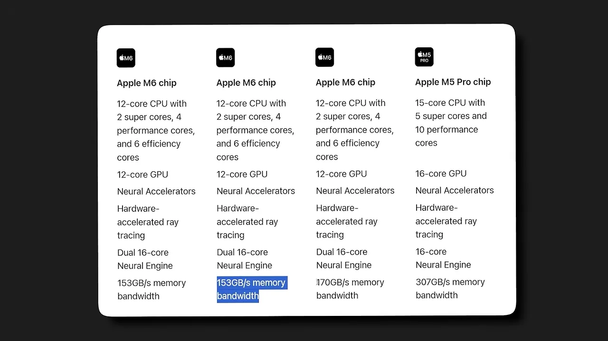
가장 싼 모델은 헤드라인 숫자를 받지 못하는 셈이에요. 발표자는 지난 에피소드에서 "550GB/s"라고 잘못 퍼진 기기가 실제로는 273GB/s였던 일을 떠올리며, 2,000달러를 쓰기 전에 각주부터 읽으라고 해요.
M5 Pro 미니와 가격 사다리
M5 Pro 미니는 CPU 최대 18코어, GPU 20코어, 통합 메모리 최대 64GB, 대역폭 307GB/s예요. Thunderbolt 5 포트가 세 개라 외장 저장장치도 병목이 되지 않아요. Apple 스토어 화면 오른쪽에 시작가 1,699달러가 보여요.
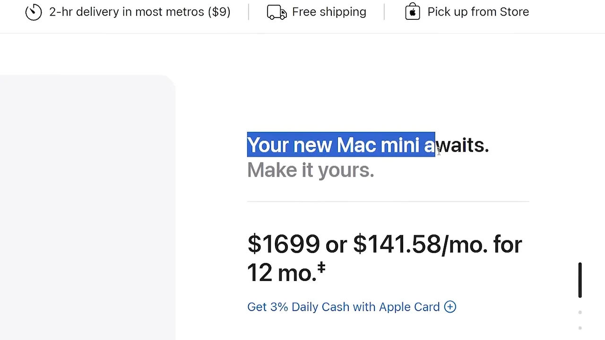
미니 기본 가격은 599에서 799, 다시 899달러로 올랐어요. 발표자는 칩이 좋아져서 오른 게 아니라고 강조해요. 이유는 뒤에 나오는 메모리 가격이에요.
32GB가 금방 차는 이유
발표자가 말로 짚은 모델 크기를 한 그림에 모았어요. 4비트로 양자화한 모델이 차지하는 메모리와, 기기마다 쓸 수 있는 메모리 천장을 같은 눈금에 놓았어요.
32B 모델은 컨텍스트 없이도 20GB 가까이 먹어요. 여기에 컨텍스트 윈도우와 운영체제 몫을 더하면 32GB 천장에 닿아요. 그래서 899달러 미니는 작은 모델과 짧은 프롬프트에는 좋지만 에이전트 서버는 아니라고 해요. (화면 그래픽에는 32B 4비트가 12GB로 적혀 있지만, 발표자 설명과 앞뒤 계산은 20GB 쪽이에요.)
64GB M5 Pro도 넉넉하지 않아요. PC(Personal Computer) World는 실무에 믿고 쓸 27B 모델이 겨우 들어간다고 평했어요. AMD Strix Halo는 gpt-oss-120b를 60GB 아래로는 아예 올리지 못했으니, 64GB M5 Pro는 이론상 올라가도 컨텍스트 둘 자리가 없어요.
용량은 무엇이 올라가는지를, 대역폭은 돌아갈 때의 체감을 정해요. 170GB/s에서 8B 모델은 기다릴 일이 없지만, 32B를 올리면 문장이 한 줄씩 만들어지는 게 보여요. M5 Pro의 307GB/s는 그 여유를 거의 두 배로 늘려요.
배수 광고의 함정과 구독료 계산
배수만 있고 기준값은 없어요
Apple은 AI(Artificial Intelligence) 성능을 거의 상대 배수로만 설명해요. 아래 Apple 페이지에서 파랗게 칠한 첫 줄이 문제의 숫자예요. M6 미니가 LM Studio의 LLM(Large Language Model) 프롬프트 처리에서 M1 미니보다 13.5배, M4보다 4.8배 빠르다고 적혀 있어요.
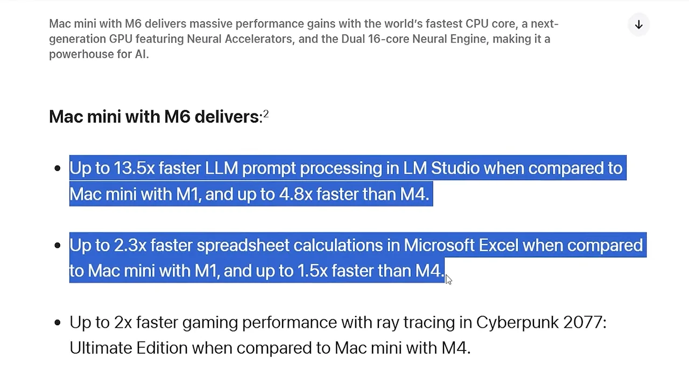
M5 Pro도 M2 Pro보다 8.5배, M4 Pro보다 4배라고 했어요. 발표자가 더 문제 삼는 건 지표 선택이에요. 프롬프트 처리는 입력을 한꺼번에 읽는 단계라 Neural Engine에서 병렬로 잘 돌아가요. 가장 유리한 숫자를 고른 거죠.
반대로 화면에 글자가 기어 나오는 속도, 즉 생성 속도는 메모리 대역폭이 정해요. M5에서 M6로 대역폭은 11%만 늘었어요. 5년에 걸쳐 13배 좋아진 숫자를 헤드라인에 올리고, 실제로 체감하는 숫자는 1년에 10분의 1만 늘었다는 거예요.
경쟁 기기는 128GB부터 시작해요
AMD Strix Halo 박스와 NVIDIA DGX Spark는 보통 128GB 통합 메모리부터 시작해요. M6 상한의 네 배, 1,699달러 M5 Pro의 두 배예요. Strix Halo는 gpt-oss-120b를 초당 약 34토큰으로 돌려요.
128GB가 모두 모델 몫은 아니에요. 운영체제와 오버헤드를 빼면 실사용은 96GB쯤이에요. 그래도 64GB M5 Pro는 120B 모델을 쓸 만하게 올릴 수 없어요. 느리게라도 돌리는 게 아니라 아예 안 돌아가요.
공정하게 하자면 PC 쪽에도 단점이 있어요. AMD 가속기 주변 소프트웨어는 CUDA(Compute Unified Device Architecture)보다 얇고, 많은 도구가 NVIDIA를 전제로 만들어져 있어요. NVIDIA Spark는 그 문제를 풀어 주는 대신 값을 더 받아요. Apple의 강점은 익숙한 기계에서 조용히 다 돌아간다는 점이에요. 맨 위에는 512GB Ultra Studio가 있지만 5,499달러부터예요. 라인업은 위쪽에서는 말이 되고 아래쪽에서는 말이 안 된다는 게 발표자 평가예요.
구독료와 견줘 보면
크리에이터의 월 청구서를 쌓아 보면 이렇다고 해요.
| 항목 | 영상이 든 금액 |
|---|---|
| 채팅 요금제 | 월 20달러 |
| 코딩 도우미 | 월 20달러 |
| 이미지 생성 | 그 위에 추가 |
| API(Application Programming Interface) 요금 | 뭔가 제대로 만들기 시작하면 추가 |
| 합계 | 월 60~200달러 |
이 기준이면 1,699달러 M5 Pro는 많이 쓰는 사람에게 약 9개월 만에 회수돼요. 적게 쓰는 사람은 2년이 훌쩍 넘게 걸려요. 전기료는 하루 몇 시간 돌려도 한 달 몇 달러 수준이라 계산에 거의 안 들어가요.
문제는 그 대가로 무엇을 얻느냐예요. 1,699달러 박스가 돌리는 좋은 27B 모델은 GPT-5나 Claude가 아니에요. 요약, 초안, 태깅, 분류, 밤새 도는 에이전트 루프, 외부에 보내기 싫은 일에는 충분히 쓸 만해요. 처음부터 정확해야 하는 일은 여전히 최상위 모델로 가요.
Your bill shrinks. It doesn't disappear.
청구서는 줄어요. 사라지지는 않아요.
— 영상 11:14
로컬이 완전히 이기는 일은 하나예요. 밤새 도는 대량 작업이에요. 1년 치 영상 받아쓰기와 태깅, 상품 설명 천 개 다시 쓰기 같은 일이죠. 종량제 API는 쓸모없는 출력에도 토큰마다 돈을 받지만, 로컬 추론은 전기료만 들어요.
가격이 오르는 이유는 Apple 탓만도 아니에요. 메모리가 실제로 부족해서 서버 DRAM(Dynamic Random Access Memory)이 한 분기에 10%대 중반 올랐고, 이 상승은 2027년까지 이어질 전망이에요. 지금은 메모리를 사기에 가장 나쁜 때라는 거예요.
루머 등급, M7 로드맵, 무엇을 살까
정보마다 등급을 붙여요
발표자는 이전 에피소드에서 쓰던 등급 체계를 그대로 가져와요. 출처가 얼마나 믿을 만한지를 네 단계로 나눠요.
| 등급 | 뜻 | 이 편의 예 |
|---|---|---|
| 확정 (Confirmed) | 출시됐거나 Apple이 직접 말한 것 | M6·M5 Pro 스펙 |
| 신뢰할 만함 (Credible) | 실적이 있는 기자의 보도 | M6 상위 칩 생략, M7 일정 |
| 가능성 (Possible) | 공급망에서 나오는 이야기 | — |
| 추측 (Speculative) | 클릭을 노린 이야기 | M7 Ultra 성능 비유, M8, Mac Pro 부활 |
M6 Pro·Max·Ultra는 건너뛴대요
아래 기사 제목이 이 편의 핵심 루머예요. 오른쪽 아래에 발표자가 붙인 'CREDIBLE' 딱지가 보여요. Mark Gurman이 6월에 보도한 내용으로, Apple이 M6 상위 칩을 통째로 건너뛰고 M7으로 간다는 거예요.
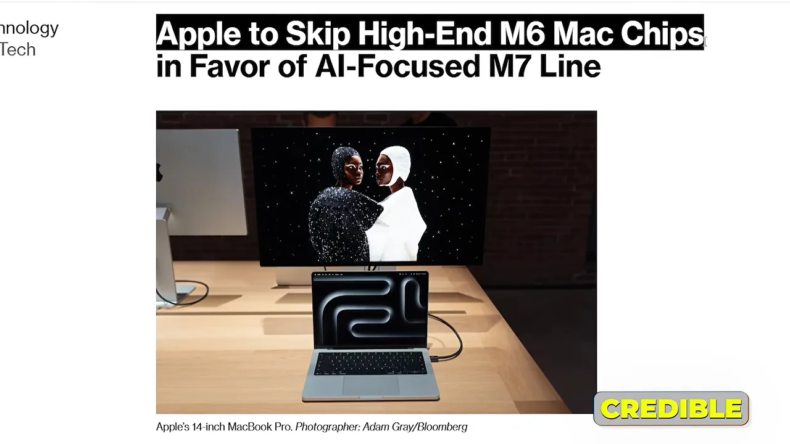
같은 보도에 따르면 기본 M7은 2027년 상반기에 약 240GB/s로 나오고, M7 Pro와 Max는 그해 말에 나와요. M7 Ultra는 2028년, 최대 1.5TB 통합 메모리를 목표로 한대요. Apple 내부에서는 NVIDIA Blackwell급에 다가간다고 본다는데, 발표자는 시점은 '신뢰할 만함', 성능 비유는 '추측'으로 나눠 적으라고 해요. 18개월 뒤 목표는 로드맵이 붙은 바람일 뿐이라는 거예요. 1.4나노 M8, Apple 자체 AI 서버 칩, Mac Pro 부활은 모두 추측 더미에 들어가요.
소프트웨어 쪽 사정
Apple의 머신러닝 프레임워크 MLX의 공동 제작자가 2월에 Anthropic으로 떠났고, 파운데이션 모델 책임자를 포함해 AI 연구자 십여 명이 나갔대요. 같은 시기에 Apple은 Siri를 위해 Google에 맞춤 Gemini 값으로 연 10억 달러쯤 낸다는 보도가 있어요. 온디바이스 AI를 파는 회사가 자기 비서에는 남의 클라우드 모델을 빌려 쓰는 셈이에요.
실제로 드러나는 곳은 파인튜닝이에요. Apple Metal 백엔드 위의 파인튜닝은 불안정해서, 경험 많은 사람들은 조용히 피한대요. 그래서 이 기계들은 추론 박스로 봐야 하고, 튜닝이 필요하면 NVIDIA를 사야 한다는 게 결론이에요.
그래서 무엇을 살까
| 기기 | 판정 | 조건 |
|---|---|---|
| M6 미니 | 로컬 AI용으로는 건너뛰기 | 싸고 조용한 Mac에 8B 모델을 덤으로 돌리는 용도라면 좋아요 |
| M5 Pro 64GB | 조건부 구매 | 상시 켜 둘 보조 기기, macOS 사용자, 27~32B 모델이면 충분할 때 |
| Studio M5 Max | 추천 | 로컬 모델로 돈을 버는 사람 |
| Studio M5 Ultra | 다른 예산의 이야기 | 512GB가 필요한 사람은 이미 알고 있어요 |
큰 오픈 웨이트 모델을 원하는 순간 M5 Pro는 답이 아니에요. 그때는 128GB PC 메모리가 64GB Apple 메모리보다 싸요.
기다리는 선택지도 있어요. Gurman 말이 맞다면 진짜 새 상위 칩은 2027년의 M7이고, 이번 Studio는 작년 칩을 입은 자리 지킴이예요. 다만 메모리 값이 2027년까지 오를 전망이라, 1년 기다리면 더 좋은 칩을 더 비싼 값에 사게 될 가능성이 커요. 발표자의 기준은 짧아요. 궁금해서 사는 거면 기다리고, 월요일에 할 일이 있으면 지금 사래요.
HP Z2 Mini G1a: 상품은 메모리예요
두 번째 편은 HP Z2 Mini G1a예요. 발표자는 숫자 하나로 시작해요. 이 상자는 GPU에 메모리 96GB를 내주고, 보통 노트북은 8GB쯤 내줘요. 이 차이 때문에 사람들이 지능을 소유하지 못하고 한 달 20달러에 빌려 쓴다는 거예요.
그래픽카드에 안 들어가면 무너져요
4비트 7B 모델은 약 5GB라 8GB 게임용 그래픽카드에 편하게 들어가요. 4비트 70B 모델은 약 40GB라 절대 안 들어가요. 넘치는 부분이 시스템 RAM(Random Access Memory)으로 흘러가면 속도가 무너져요.
- 64GB Ryzen 노트북 CPU에서 70B: 초당 약 1.4토큰. 읽는 속도보다 느려요.
- 32GB RTX 5090도 오프로딩이 시작되면 70B에서 초당 14~22토큰.
가중치만 문제가 아니에요. 대화가 길어질수록 KV(Key-Value) 캐시도 커지고, 컨텍스트를 충분히 밀어 넣으면 캐시가 모델만큼 커져요. 초당 15토큰 아래면 대화가 아니라 배치 작업을 맡기고 커피 타러 가는 일이 된대요. 그래서 답은 더 빠른 칩이 아니라 GPU가 닿을 수 있는 메모리라는 거예요.
Ryzen AI Max+ PRO 395와 메모리
HP의 답은 AMD Ryzen AI Max+ PRO 395예요. 아래 AMD 슬라이드에 칩의 네 가지가 정리돼 있어요. 위에서부터 Zen 5 성능 코어 16개, RDNA(Radeon DNA) 3.5 연산 유닛 40개, XDNA 2 NPU(Neural Processing Unit) 50 TOPS(Tera Operations Per Second), 그리고 새 메모리 인터페이스의 256GB/s 대역폭이에요.
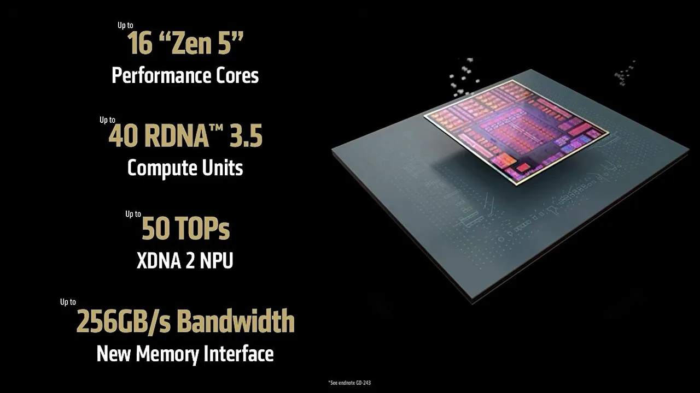
그래픽은 Radeon 8060S예요. 2.9GHz로 도는 40 CU(Compute Unit)짜리 외장급 GPU가 같은 메모리 풀에 붙어 있는 구조예요. 발표자는 "메모리가 진짜 상품"이라고 해요. 아래 스펙표에 메모리 종류 LPDDR5X(Low Power Double Data Rate 5X), 128GB, 8000MT/s, 대역폭 256GB/s가 차례로 보여요.
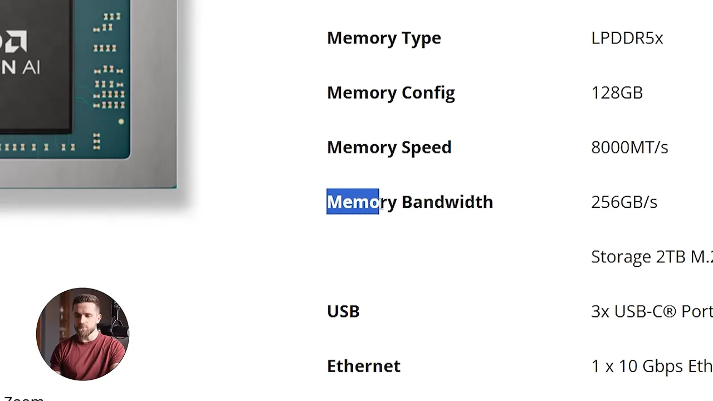
그다음 BIOS(Basic Input/Output System)에서 이 풀 중 96GB를 그래픽 전용 메모리로 떼어 줘요. 아래 AMD 페이지 오른쪽 'Up to 128 GB Unified Memory' 설명에 최대 96GB를 GPU에만 따로 줄 수 있다고 적혀 있어요. 전체로는 112GB까지 GPU가 다룰 수 있대요.
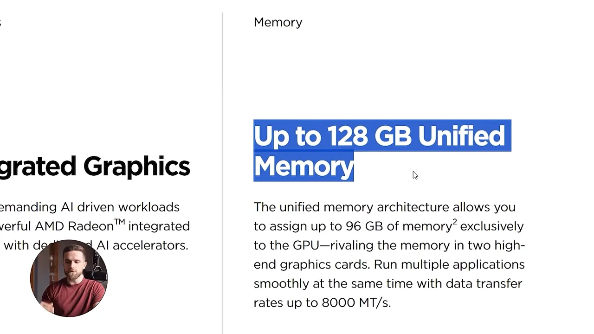
본체는 3L가 조금 안 돼서 모니터 뒤에 숨길 수 있어요. 300W 전원부가 안에 들어 있고, 칩은 45~120W 사이로 설정할 수 있어요. RTX 4090 한 장이 최대 약 350W를 먹는 것과 대비돼요. 다만 지속 부하에서의 소음은 아무도 재지 않았어요. 열이 적으니 팬이 조용할 거라는 건 추론일 뿐이라, 정숙함이 꼭 필요하면 측정 결과를 기다리래요.
가격은 모양으로만 읽어요
아래 HP 판매 페이지에 128GB 구성의 가격 4,999달러가 보여요. 메모리를 줄인 구성은 2,000~3,000달러대고, 영국에서는 32GB가 약 2,280파운드(부가세 별도), 64GB에 Pro 390 칩 구성이 약 3,300파운드였대요.
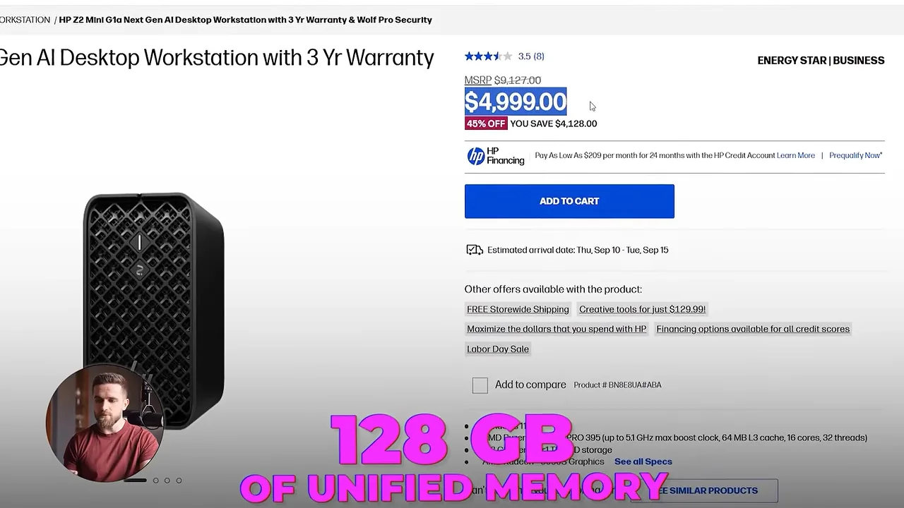
실제로 얼마나 빠를까요
| 상황 | 초당 토큰 | 발표자 평가 |
|---|---|---|
| gpt-oss-120b (양자화·컨텍스트에 따라) | 31~55 | 읽는 속도보다 빨라요 |
| 밀집 70B | 4~6 | 밤샘 작업용, 대화로는 괴로워요 |
| 컨텍스트 3만 토큰 이상 | 10대 후반 | 그래도 뒤에서 돌리기엔 충분해요 |
설치는 생각보다 쉽대요. AMD 가이드는 LM Studio에서 flash attention을 켜고 컨텍스트를 131,072토큰으로 잡아 gpt-oss-120b를 띄우는 법을 알려 주고, 그 과정에서 Z2 Mini G1a를 직접 언급해요. 같은 가이드는 Qwen3 Coder 30B 8비트를 로컬 서버로 띄워 VS Code의 Cline에 연결해요. 코드가 책상을 떠나지 않고, 점심시간이면 끝나는 작업이래요.
이 기계에 맞는 모델은 MoE예요
초보자에게 추천하는 7~8B 밀집 모델은 8GB 그래픽카드에 맞춰 만든 크기예요. 이걸 이 상자에 올리는 건 창고를 빌려 자전거 한 대를 보관하는 꼴이래요. 이 기계의 값을 하는 건 MoE 모델이에요. 아래 그림처럼 입력이 Gating Network를 지나 여러 Expert 중 일부로만 갈라져요.
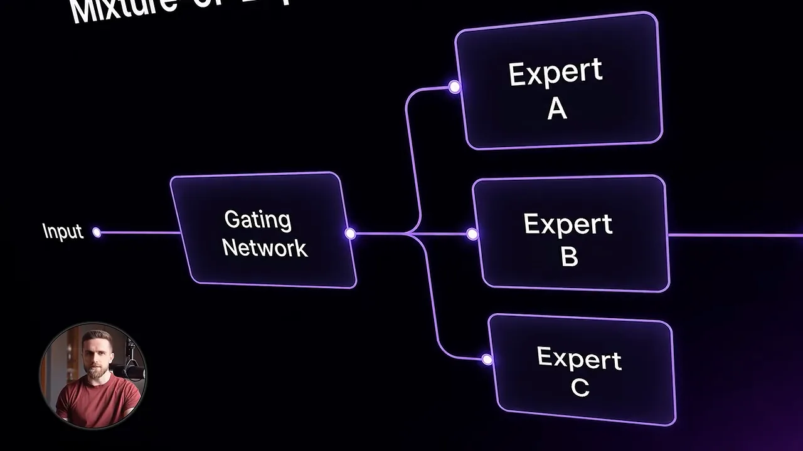
gpt-oss-120b는 파라미터 약 1,170억 개를 저장하고 토큰마다 약 50억 개만 써요. 큰 메모리와 보통 대역폭이라는 이 기계의 모양과 꼭 맞아서, 여기서는 120B 모델이 70B 모델보다 빨리 돌아요.
| 모델 | 언제 쓰나요 |
|---|---|
| Qwen3 계열 | 먼저 설치할 모델. 크기 선택지가 가장 넓어요 |
| Qwen3 Coder 30B (8비트) | 이 기계를 코딩 머신으로 만드는 최적점 |
| Gemma 3 27B | 컴파일보다 잘 읽히는 글이 필요할 때 |
| Mistral 대형 모델 | 지시를 정확히 따라야 하는 지루한 반복 작업 |
| Llama 70B급 | 초당 4~6토큰. 문서 폴더를 밤새 처리할 때 |
잊기 쉬운 쓰임새가 이미지 생성이에요. 확산 모델은 언어 모델보다 훨씬 작아서, 메모리가 넉넉하면 배치 크기를 고민할 일이 없어요. 아무도 이미지 때문에 이 기계를 사지 않지만, 결국 가장 많이 쓰게 되는 일이 되기도 한대요.
발표자가 그리는 실제 하루는 아래 그림과 같아요. 아래 세 칸은 통화를 받아쓰는 Whisper, 지난주 계약서를 색인하는 임베딩 모델, 지원 요청 스크린숏을 읽는 비전 언어 모델이고, 그 위에 채팅 세션이 하나 더 올라가요.
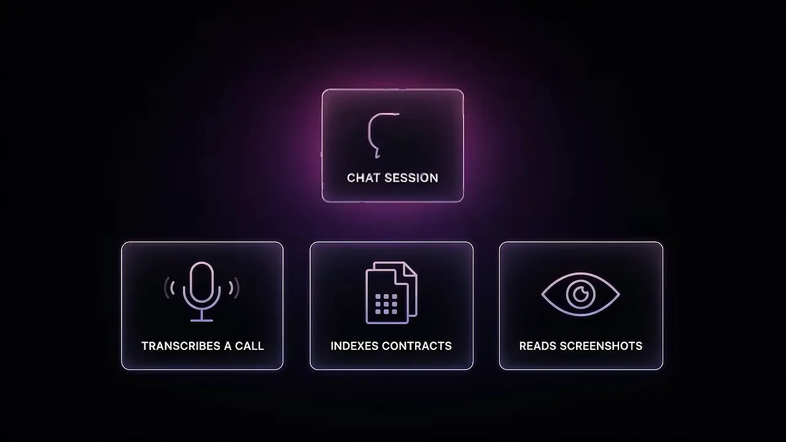
HP를 경쟁 기기와 비교하고, 누가 사야 하나
경쟁 기기와 하나씩 견주면
| 상대 | 상대가 나은 점 | HP 쪽이 나은 점 |
|---|---|---|
| Mac Studio | 대역폭이 훨씬 넓어 같은 70B를 더 빨리 내요 | 상위 구성 기준으로 훨씬 싸요. macOS의 로컬 추론 생태계는 Windows·Linux보다 좁아요 |
| NVIDIA DGX Spark | CUDA. 연구 코드와 파인튜닝 스크립트가 CUDA를 먼저 가정해요 | 추론만 하면 성능 차이는 거의 없고 가격 차이만 남아요 |
| RTX 5090 조립 PC | 모델이 32GB 안이면 가장 빨라요 | 32GB를 넘는 순간 5090이 가장 느려져요 |
| 같은 칩의 저가 박스 (Framework, GMKtec, Beelink) | 눈에 띄게 싸요. 메모리 풀이 같아 이론상 속도도 같아요 | 아래 세 가지 웃돈 |
Mac 사용자라면 Mac을 사고 그만 보면 된대요. 아니라면, 0달러짜리 프로젝트를 하려고 한 가지 일 때문에 Apple 세금을 내는 건 이상한 출발이래요.
HP가 받는 웃돈은 세 가지예요. 긴 작업에서도 부스트 클럭을 유지하도록 만든 본체(다만 저가 박스와 비교한 독립 시험은 아직 없어요), 출장 서비스가 붙은 기업용 보증, 그리고 IT(Information Technology) 부서에만 쓸모 있는 기업용 펌웨어 관리예요. 집에서 혼자 쓰면 보증과 펌웨어는 웃돈 값을 못 하고, 사무실에 두고 고장 나면 남이 책임지는 기계라면 그 웃돈이 핵심이래요.
회수 기간보다 중요한 것
이 편의 구독 계산은 ChatGPT Plus 20달러, Claude Pro 20달러, Midjourney, 밤새 에이전트가 쓰는 API 요금이에요. API를 정직하게 넣으면 월 60~80달러, 1년에 약 900달러예요. 메모리를 줄인 구성은 2~3년, 128GB 구성은 4년쯤 걸려 회수돼요. 발표자도 이 업계에서 긴 시간이라는 걸 인정해요.
진짜 이유는 따로 있대요. 아무것도 방 밖으로 나가지 않는다는 점이에요.
- 고객 계약서, 공개 전 대본, 코드베이스, 채팅창에 붙이기 싫은 진료 기록 PDF(Portable Document Format)가 내 드라이브에만 있어요.
- 사용량 제한도, 몰리는 시간대의 대기열도 없어요.
- 모델이 몰래 싼 것으로 바뀌거나, 정책 변경으로 내 용도가 금지되는 일도 없어요.
- 폴더 하나에 에이전트를 붙여 미터기 걱정 없이 9시간 돌릴 수 있어요.
소프트웨어와 NPU의 한계
AMD의 소프트웨어 스택은 CUDA가 아니라 ROCm이고, 이 세대 칩에서는 아직 하드웨어를 따라잡는 중이에요. LM Studio와 Ollama면 보통 사람이 원하는 건 대부분 되고 설정도 몇 번 클릭이면 끝나요. 그 밖으로 나가면 설명이 길어지고, 같은 빌드 오류를 겪은 사람의 글은 답 없이 끝나 있대요. 망가진 건 아니고, 편한 길이 NVIDIA보다 좁을 뿐이에요.
앞에서 기억해 두라던 50 TOPS NPU가 여기서 나와요. 이 영상에 나온 모델에는 거의 도움이 안 돼요. 언어 모델은 Radeon 그래픽과 그 뒤의 메모리 풀에서 돌고, NPU는 작은 배경 작업을 맡으면서 스펙표만 화려하게 해요. 학습도 한계예요. 큰 모델 파인튜닝은 다른 종목이고, 운영용 서빙 프레임워크도 NVIDIA를 먼저 가정해요.
다음 세대 루머: Medusa Halo
아래 기사의 강조 부분은 차기 Medusa Halo의 버스 폭이 384비트로 넓어진다는 이전 루머예요. 기사 위쪽에는 지금 Strix Halo가 256비트, 8,000MT/s로 256GB/s를 낸다는 설명도 보여요.
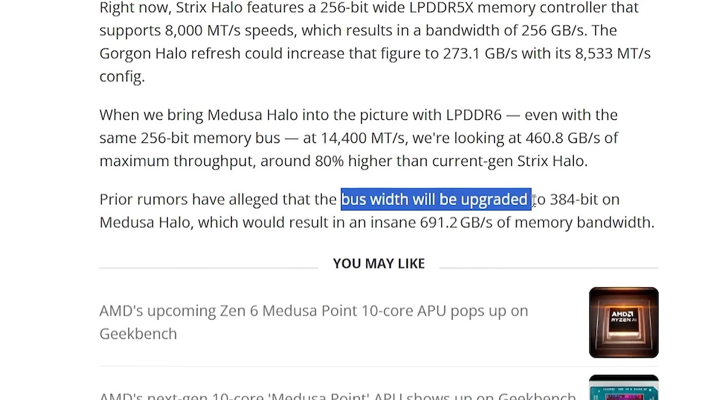
유출된 버스 폭은 포럼 글에서 제품 페이지로 가는 사이에 줄어드는 버릇이 있고, 시점도 2027년 하반기 이야기래요. 발표자가 진지하게 보는 건 방향이에요. 이제 모든 제조사가 큰 모델을 책상에서 막는 게 연산이 아니라 메모리 용량이라는 걸 알고, 같은 답을 향해 가고 있어요.
살까, 기다릴까
- 이번 달에 시작할 프로젝트가 있나요? 그러면 사요. 지금 96GB에 들어가는 모델은 새 하드웨어가 나와도 나빠지지 않고, 1년 써 본 경험은 기다린 사람에게 없어요.
- 작은 은색 상자가 선반에서 멋져 보여서인가요? 그러면 얼마든지 기다려도 돼요.
- 밀집 70B 모델을 대화 속도로 돌려야 하나요? 이 세대는 어떤 가격대로도 못 해요. 이 경우만 기다리는 게 맞아요.
사지 말아야 할 사람도 분명해요. 일주일에 몇 번 이메일과 간단한 질문에 챗봇을 쓰면 클라우드의 최상위 모델이 낫고, 20달러가 더 싸요. 세상에서 가장 강한 모델을 원하면 그건 오픈소스가 아니고 내 책상에서 돌지도 않아요. 학습이 목적이면 NVIDIA를 사고 값을 받아들이래요. 로컬은 물량, 프라이버시, 독립성이 목적일 때 가치가 있고, 편의가 목적이면 나쁜 거래예요.
답이 이미 '예'인 사람은 셋이에요. 밤새 대본 폴더에 에이전트를 돌리는 1인 크리에이터, 일이 잘될수록 커지는 클라우드 청구서 없이 강한 코드 자동완성을 원하는 개발자, 그리고 고객 데이터를 호스팅 서비스에 법적으로 붙일 수 없는 컨설턴트예요. 이 크기에서 로컬 AI가 취미를 넘어 인프라가 되는 첫 기계라는 평가지만, 쓸 만한 구성은 비싼 쪽이고 메모리는 납땜이라 한 번에 제대로 사래요.
DGX Spark: 프리필은 5배, 디코드는 13%
9개월 일찍 보여 주고, 출시 뒤에 17% 올렸어요
세 번째 편은 NVIDIA DGX Spark예요. 2025년 1월 CES(Consumer Electronics Show)에서 젠슨 황이 Mac mini만 한 상자를 들고 'Project Digits'라는 개인용 AI 슈퍼컴퓨터를 3,000달러 목표로 소개했어요. 3월 GTC(GPU Technology Conference)에서 DGX Spark라는 이름을 받았고, 2025년 10월 15일 3,999달러로 출시됐어요. 첫 물량 일부는 젠슨 황이 SpaceX의 일론 머스크, OpenAI의 샘 올트먼에게 직접 전달했대요.
그리고 2026년 2월 27일, Founders Edition 가격이 4,699달러가 됐어요. 칩도 메모리도 그대로인데 700달러, 17.5%가 올랐어요. 이유는 메모리 공급이었고, 그건 사실이래요. 영상 시점까지 가격은 내려오지 않았어요.
발표자가 더 아프게 보는 건 타이밍이에요. NVIDIA가 이 범주를 가장 먼저 발표했지만 가장 늦게 출하했어요. Spark가 10월에 책상에 도착했을 때는 같은 종류의 큰 통합 메모리를 단 AMD Strix Halo 박스가 이미 사람들 집에서 돌고 있었어요.
모든 박스가 비싸진 이유는 메모리예요
세 편을 관통하는 거시 배경이에요. TrendForce는 2026년 1분기 일반 DRAM 계약가가 전 분기 대비 93~98% 올랐고, PC DRAM은 100% 넘게 오를 거라고 했어요. Apple은 6월에 '이례적인 수요 급증'이라고 했고, 아래 화면처럼 Tim Cook은 월스트리트저널에 이를 '100년 만의 홍수'라고 표현했어요.
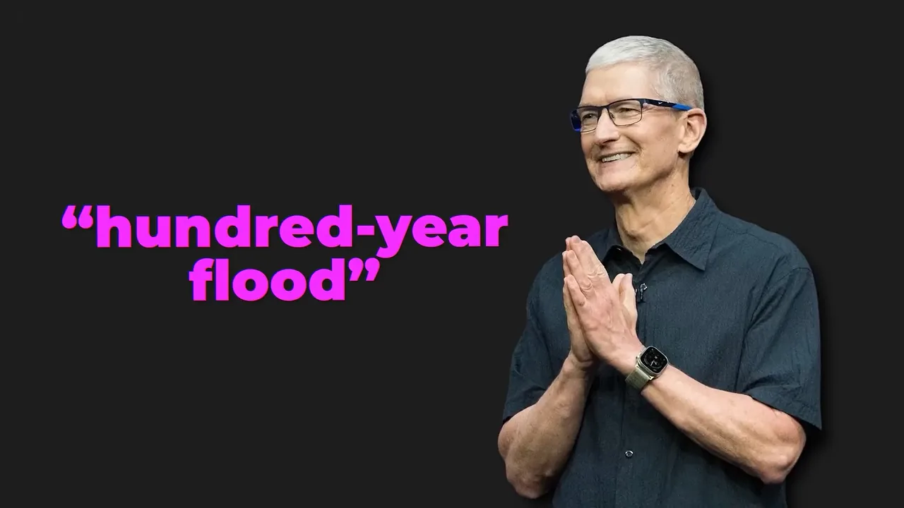
프리필과 디코드는 다른 동물이에요
이 편의 핵심 틀이에요. 디코드는 모델이 말하기 시작한 뒤 토큰이 나오는 속도이고, 채팅창에서 체감하는 속도예요. 디코드는 메모리 대역폭 하나에 묶여 있어서, 대역폭을 토큰마다 읽는 가중치 크기로 나누면 초당 토큰 수에 가까운 값이 나와요.
Spark의 대역폭은 273GB/s예요. 아직도 인용되는 300이 아니래요. AMD 박스는 서류상 256GB/s예요. 둘의 차이는 7%뿐이라 채팅 속도로는 사실상 같은 기계예요.
프리필은 모델이 답하기 전에 프롬프트를 읽는 단계예요. 이건 연산에 묶여 있어서 대역폭이 아니라 텐서 코어 수를 따라가요. 6,144개 CUDA 코어를 단 Blackwell GPU가 AMD APU(Accelerated Processing Unit)를 앞지르는 곳이 바로 여기예요. 아래 화면의 왼쪽 막대 한 쌍이 프리필, 오른쪽 한 쌍이 디코드예요.
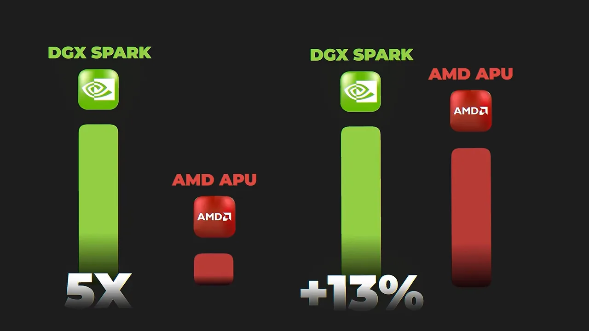
반대로 문서 전체를 통째로 밀어 넣는 일을 하루 종일 한다면, 그 5배가 이 상자가 존재하는 이유 전부래요.
같은 시험, 네 기계
발표자는 공개 벤치마크에서 gpt-oss-120b 결과를 모았어요. 대부분의 상자가 실제로 올릴 수 있는 가장 큰 모델이라서 골랐대요. 아래 화면은 그중 Mac Studio M3 Ultra와 Spark를 나란히 놓은 표예요. 프리필은 Spark가 1,723, 디코드는 M3 Ultra가 70.79로 서로 이기는 칸이 엇갈려요.
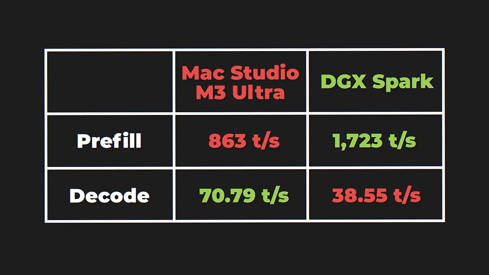
영상에서 읽어 준 숫자를 같은 눈금에 그려 보면 엇갈림이 더 잘 보여요.
프리필 1,821이라는 숫자도 돌아다니는데, 출처가 하나뿐이라 쓰지 않았대요.
GB당 가격과 숨은 스펙
쓸 수 있는 메모리 1GB당 가격으로 보면 Strix Halo가 약 11.70달러, Spark 36.70달러, M4 Pro 미니 41.60달러, M3 Ultra 55.20달러예요. Spark는 128GB 중 약 119GB를 쓸 수 있고 메모리에 ECC(Error-Correcting Code)가 없어요. 일주일짜리 파인튜닝을 지켜보지 않고 돌릴 생각이면 알아 둘 점이래요.
GB10 Grace Blackwell 칩은 20코어 Arm CPU(X925 10개, A725 10개)와 6,144코어 Blackwell GPU를 묶었어요. 유명한 '1페타플롭'은 FP4(4-bit Floating Point) 기준 마케팅 수치예요. 실제로 학습에 쓰는 BF16(Brain Floating Point 16) 밀집 연산은 약 60테라플롭이에요. 아래는 Apple MLX 팀의 Awni Hannun이 직접 잰 결과를 올린 글이에요. 강조된 부분이 'torch와 MLX 둘 다 BF16에서 약 60TF만 나온다'는 문장이에요.
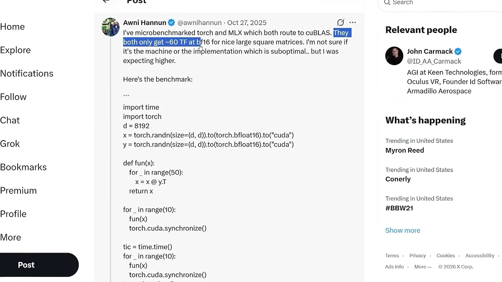
Spark 논란, 클러스터, 그리고 Mac과의 조합
젠슨 황이 직접 나선 이유
2026년 1월 8일 무렵 Business Insider가 Spark의 반응이 얼마나 나쁜지를 다룬 NVIDIA 내부 이메일을 보도했고, 젠슨 황이 직접 Spark를 '궁극의 개발자 플랫폼'이라며 옹호했어요. 발표자는 이 표현이 아주 구체적인 방어라고 봐요. 값에 비해 빠르다고 변호한 게 아니라, 누구를 위한 기계인지를 변호했다는 거예요.
논란의 중심은 늘 273GB/s였어요. 리뷰어들은 1년 동안 데스크톱 DGX가 데이터센터 부품처럼 느껴지길 기대했어요. 그다음 들어온 독립 측정은 양쪽 방향으로 지저분했어요. 아래는 John Carmack이 2025년 10월 27일에 올린 측정 결과예요. 강조된 부분은 정격 240W 중 100W 정도만 쓰고, 약속한 성능의 절반쯤만 낸다는 내용이에요.
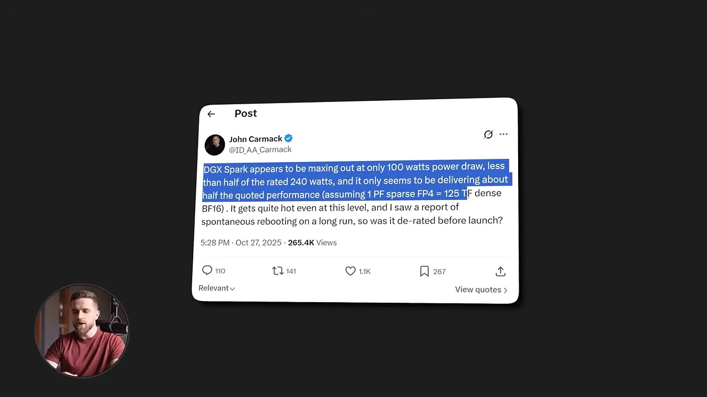
두 대를 묶으면
Spark 두 대를 200Gb QSFP(Quad Small Form-factor Pluggable) 케이블 한 줄로 이으면 메모리 256GB가 되고, 공식적으로 FP4 405B 추론을 지원해요. 네 대까지 묶어 700B급 추론도 공식 지원하지만, 공개 시험은 거의 다 두 대까지였대요. 걸림돌은 케이블이었어요. 아래 판매 페이지의 0.4m QSFP 112G 케이블이 몇 달 동안 품절이었고, 값은 159~229달러였대요.
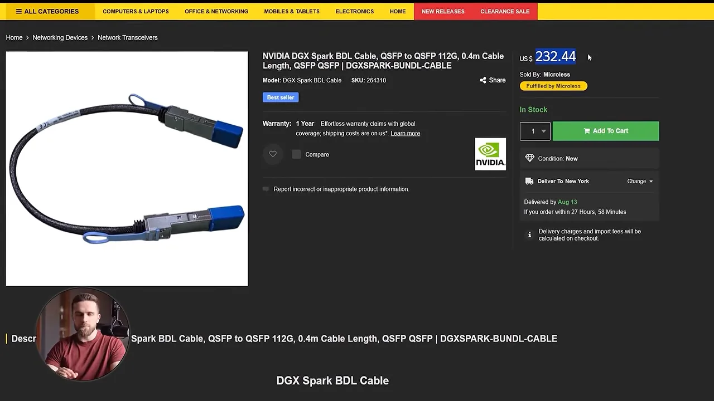
확장 효율도 실망스러워요. 두 대로 돌린 gpt-oss-120b는 초당 58.82에서 75.96토큰으로 늘었어요. 하드웨어를 두 배로 늘렸는데 속도는 두 배 근처에도 못 가요.
가장 강한 반론 두 가지
첫째는 동시 처리예요. 동시 요청을 256개까지 밀어 넣으면 합계 초당 약 862토큰이 나와요. 혼자 채팅하는 게 아니라 작은 팀에 서비스한다면 계산이 완전히 달라져요.
둘째는 Sebastian Raschka의 글이에요. 그는 M4 Pro 미니를 쓰면서도 지속적인 파인튜닝에서는 Spark 편을 들어요. 아래 글의 강조 부분 이후에 그 이유가 있어요. PyTorch를 쓴다면 CUDA 지원이 꼭 필요한데, macOS의 MPS(Metal Performance Shaders)는 아직 불안정해서 파인튜닝이 수렴하지 않을 때가 많대요.
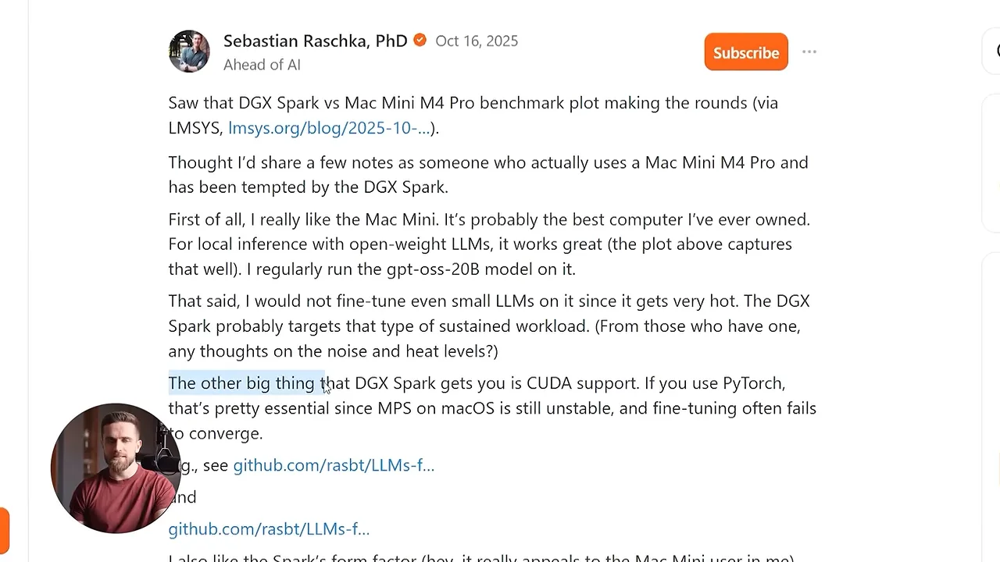
NVIDIA는 CES 2026에서 TensorRT-LLM, FP4, Eagle 3 투기적 디코딩으로 일부 작업에서 최대 2.5배 빨라진다는 소프트웨어 업데이트도 냈어요. 발표자는 '일부'라는 단어가 그 문장에서 많은 일을 하고 있다고 꼬집어요.
Spark와 Mac을 함께 쓰면
발표자가 이 시리즈에서 가장 좋아하는 결과예요. 프리필은 연산에 묶여 Spark가 이기고, 디코드는 대역폭에 묶여 Apple이 이겨요. 그래서 EXO Labs는 두 기계를 이어 각자 잘하는 반쪽을 맡겼어요.
flowchart LR P["프롬프트 8,192토큰"] --> S["DGX Spark
프리필 (프롬프트 읽기)"] S --> M["Mac Studio M3 Ultra
디코드 (답 생성)"] M --> A["답"]
1년 내내 서로 공격하던 두 회사의 하드웨어가 경쟁이 아니라 보완 관계라는 거예요. 이미 Mac이 있는데 Spark를 고민 중이라면, 어떤 벤치마크 줄보다 이 조합이 더 흥미로운 구매 이유래요.
사려면 무엇을, 누가
CUDA 안에서 일하거나 파인튜닝을 자주 하거나 작은 팀에 서비스한다면 GB10 박스를 사래요. 다만 Founders Edition은 건너뛰래요. 아래 표처럼 같은 칩을 쓰는 OEM(Original Equipment Manufacturer) 제품이 여럿 있어요. ASUS Ascent GX10은 1TB 구성이 약 3,099달러, MSI EdgeXpert는 약 2,999달러예요.
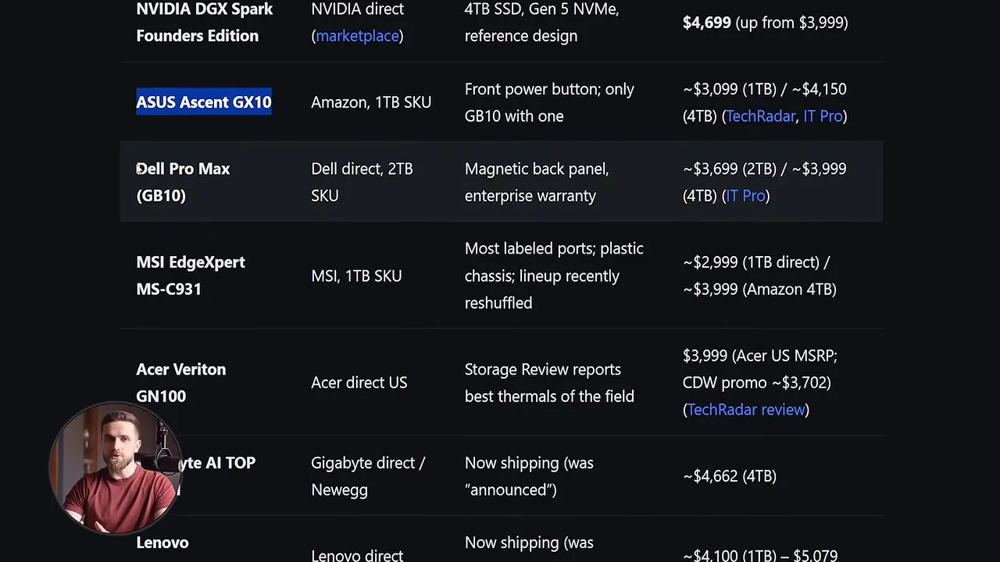
클라우드 없이 채팅창에서 개인 모델만 쓰고 싶다면 Strix Halo 박스를 사고 차액을 챙기래요. 프리필 5배를 포기하는 대신 디코드는 13% 안쪽이고, GB당 36.70달러 대신 11.70달러예요. AMD가 직접 내놓은 Ryzen AI Halo 개발 키트(3,999달러, Micro Center 단독)는 서드파티 박스가 절반 값에 같은 일을 하니 권하기 어렵대요. Apple 쪽 M4 Pro 미니는 48GB가 상한이라 120B 모델을 아예 못 돌려요. 작은 모델용 기계예요.
결론은 이래요. Spark는 좋은 기계를 잘못된 사람에게 나쁜 값에 판 경우예요. CUDA 개발 박스로는 진짜고, 키노트 속 '개인용 AI 슈퍼컴퓨터'로는 출시 전에 더 싼 하드웨어에 따라잡혔대요. 발표자가 남기고 싶은 건 하나예요. '대역폭 ÷ 모델 크기'는 아직 나오지 않은 기계의 디코드 속도까지 예측해 줘요.
Mac Studio M5 Ultra: 스펙과 Apple 숫자 해부
마지막 편은 숫자 하나로 시작해요. 월 110.10달러예요. 발표자 추정이 아니라 Apple 할부 페이지에 적힌 M5 Ultra Mac Studio의 월 리스 금액이에요. ChatGPT, Claude, Gemini, Grok, 영상·음성 생성 도구에 매달 내는 돈을 합치면 많은 사람에게 이 숫자와 아플 만큼 가깝대요.
Apple은 이 기계에 4.3배, 4.5배, 9.8배 같은 배수를 붙였어요. 초당 토큰 수는 0개예요. 그래서 발표자는 영상의 모든 숫자에 'Apple 주장', '측정된 시험', '내 계산' 중 하나를 붙여 구분하겠대요.
확정된 스펙
M5 Ultra는 M5 Max 두 개를 UltraFusion으로 묶은 칩이에요. M5 Max 하나가 다시 다이 두 개라서 모두 네 개예요. 아래 Apple 페이지에서 왼쪽 M5 Max와 오른쪽 M5 Ultra를 비교해 보면, Ultra는 최대 CPU 36코어, GPU 80코어, 통합 메모리 512GB, 대역폭 1.2TB/s, Neural Engine 32코어예요.
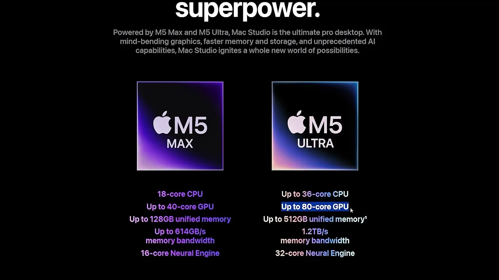
메모리는 96GB, 256GB, 512GB 세 가지예요. 512GB는 10월 말에야 출하돼요. 두 반쪽 칩 사이는 UltraFusion으로 4.4TB/s로 이어져요. 발표자가 가장 신경 쓰는 숫자는 대역폭이에요. 모델이 올라간 뒤 토큰 속도를 정하는 건 코어 수보다 대역폭이라서요.
그런데 바뀌지 않은 것도 있어요. 96~512GB라는 범위는 M3 Ultra와 똑같아요. 용량 천장은 그대로이고, 그 천장으로 가는 파이프만 약 50% 넓어졌어요. 이게 이번 세대의 정직한 헤드라인이래요.
실제 가격대는 1만~1만 8천 달러예요
아래 Apple 구매 화면에서 위쪽 강조 부분이 시작가 5,499달러이고, 아래쪽이 36개월 리스 월 110.10달러예요.
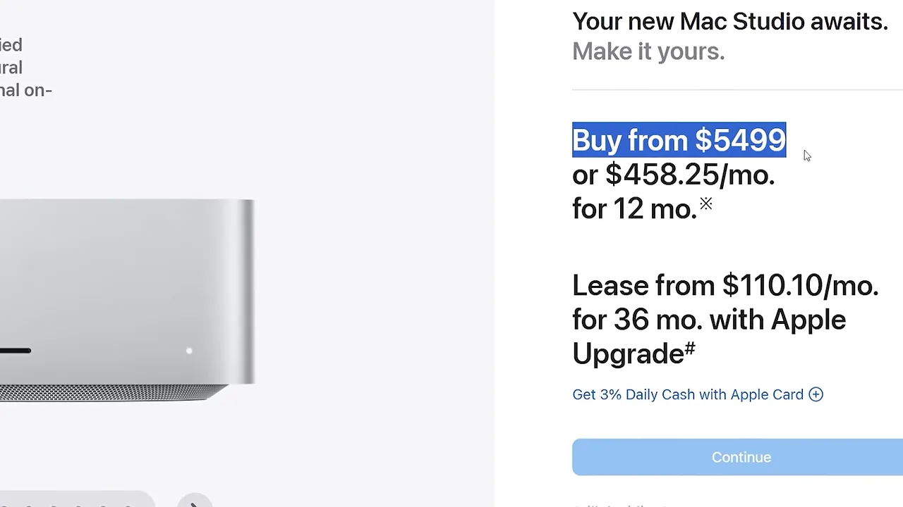
36코어 CPU와 80코어 GPU 구성은 96GB로 6,799달러부터예요. 아래 화면처럼 메모리를 256GB로 올리면 10,799달러가 돼요. 메모리만으로 약 4,000달러가 붙는 거예요.
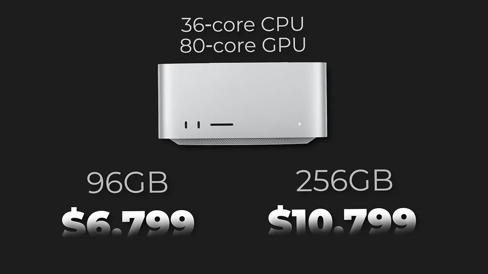
저장장치는 Max가 8TB, Ultra가 16TB까지예요. 그래서 실제로 로컬 AI에 쓸 구성은 5,500달러가 아니라 1만~1만 8천 달러대라는 게 발표자 계산이에요. M5 Max의 리스는 월 48.99달러라서, Ultra가 매달 60달러를 더 받는 건 스티커가 아니라 실제 실리콘 값이래요. 한 서드파티 구성기는 512GB 구성을 약 1만 5천 달러로 잡았어요.
Apple 숫자의 기준을 보면
발표자는 Apple 주장의 각주를 읽으면 비교 기준이 대부분 2022년 칩인 M1 Ultra라고 해요. 이 기계가 실제로 대체하는 M3 Ultra와 비교하면 Apple 스스로 낸 숫자가 달라져요. 아래 화면처럼 싱글코어 1.25배, 멀티코어 1.3배예요.
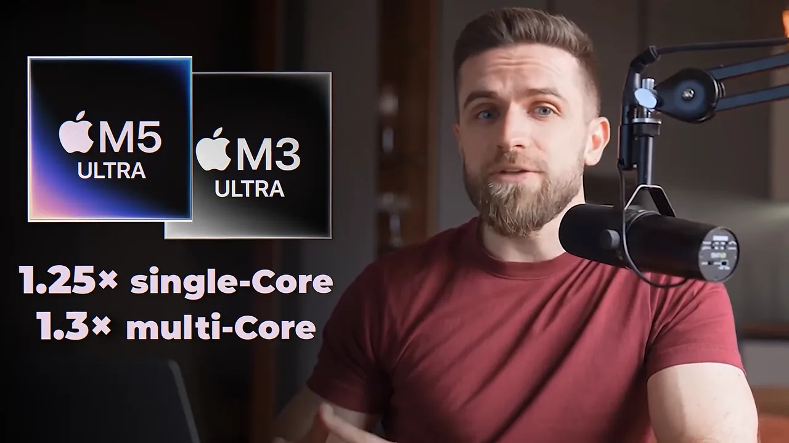
발표자가 가장 거슬려하는 건 Apple이 자기 예전 세대 말고는 아무것도 없는 척한다는 점이에요. 경쟁사 칩과 비교한 숫자는 하나도 없어요.
9.8배는 프리필이에요
여기저기 인용되는 9.8배는 LM Studio의 프롬프트 처리, 즉 프리필이에요. 코딩 에이전트에 코드베이스 전체를 매번 붙여 넣는다면 정말 쓸모 있는 숫자예요. 하지만 답이 화면에 흘러내리는 속도를 정하는 숫자는 아니에요. 아래 화면은 Apple의 M5 MLX 자료에서 가져온 대비예요.
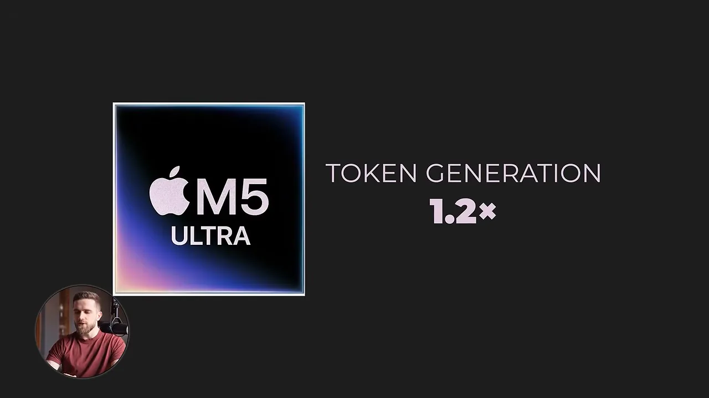
클러스터 주장은 Thunderbolt로 네 대를 묶어 3배 빨라진다는 정도예요. Apple 데모에서는 1조 파라미터 Kimi K2.6 모델이 Mac Studio 네 대에서 클라우드 없이 돌았는데, 그건 M5 Ultra가 나오기 전 이전 세대로 한 거였대요. Qwen3.6 27B가 네 대로 3배 빨라지는 데모도 있었지만, 역시 예전 Apple 하드웨어와의 비교예요. 남의 실리콘으로 같은 모델을 돌린 비교는 어디에도 없어요.
공개하지 않은 것들
발표자가 퍼센트보다 더 많은 걸 말해 준다고 보는 건 빠진 정보예요. 공정 노드도, 트랜지스터 수도 공개하지 않았고, AI 기계로 팔면서 초당 토큰 수는 하나도 내지 않았어요.
떠도는 Geekbench 기록은 하나 있어요. 아래 화면 위쪽 두 칸이 싱글코어 3,774, 멀티코어 52,516이에요.
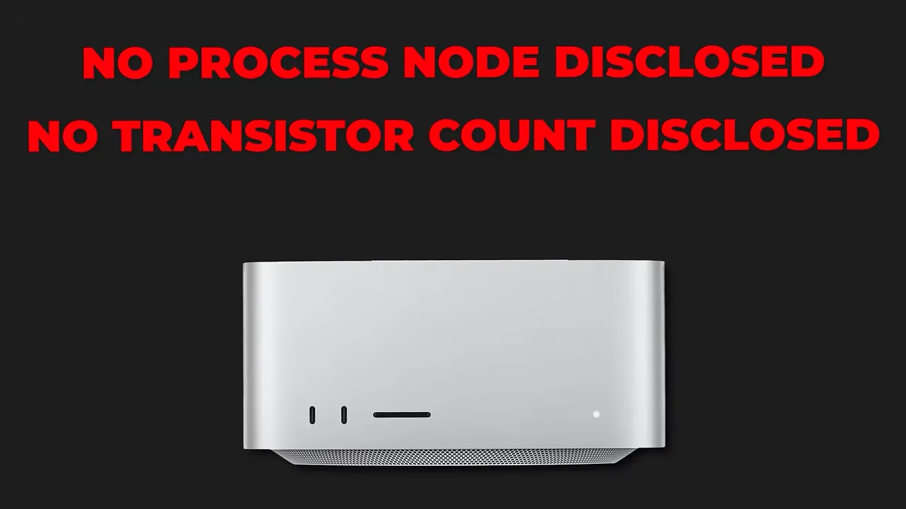
직접 계산해 보면
계산 규칙은 하나예요
여기서부터는 벤치마크가 아니라 대역폭 스펙으로 낸 발표자의 계산이에요. 토큰 하나를 만들려면 칩이 모델의 활성 가중치를 메모리에서 한 번 읽어야 해요. 그러니 대역폭을 읽어야 할 크기로 나누면 초당 토큰 수의 이론 상한이 나와요. 실제로는 스펙대로 도는 게 없어서 보통 20~30% 낮게 나와요.
이 규칙이 왜 밀집 모델과 MoE에서 다르게 나오는지는 두 구조도를 나란히 보면 보여요. 밀집 모델 그림 아래에는 '모든 파라미터가 토큰마다 활성'이라고 적혀 있어요.
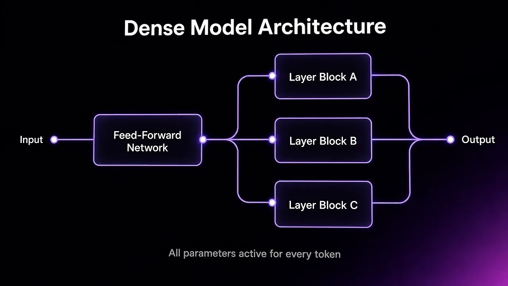
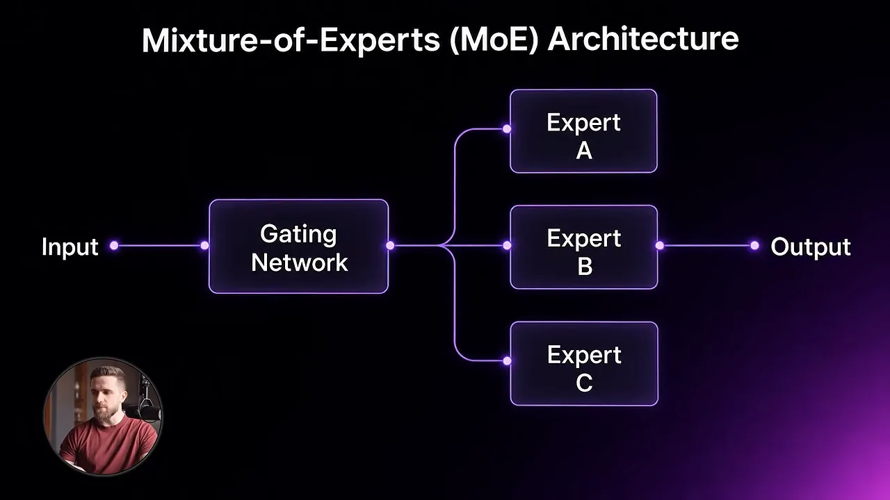
M5 Ultra의 1.2TB/s로 두 경우를 계산하면 아래와 같아요.
Apple이 데모에 쓴 Kimi K2.6 같은 1조 파라미터 MoE 모델은 토큰마다 300억~400억 개만 쓸 수 있어요. 그래도 4비트로 모델을 올려 두는 데만 500GB쯤 필요해서, 데모에 Mac Studio 네 대가 필요했던 거예요. 네 대에 나누면 한 대가 하는 계산은 활성 20B MoE를 혼자 돌리는 것과 크게 다르지 않아요. 병목은 연산에서 '상자 사이 네트워크가 데이터를 충분히 빨리 옮기느냐'로 옮겨 가요. UltraFusion과 Thunderbolt 클러스터링이 있는 이유래요.
메모리 등급은 이렇게 읽으래요. 96GB는 4비트 밀집 70B를 컨텍스트 여유와 함께 담고, 사람들이 실제로 돌리는 오픈 모델 대부분을 감당해요. 256GB부터 큰 MoE 모델이 편하게 들어가고, 이 한 단계에 약 4,000달러가 들어요. 512GB는 이 크기 상자로는 아무도 팔지 않는 등급이에요.
그래서 기대치는 저절로 나와요. 프리필은 예전 Ultra보다 크게 빨라지고, 디코드는 대역폭 50% 증가에 맞춰 적당히 빨라져요. 9.8배를 '답이 9.8배 빨리 뜬다'로 받아들이면 틀린 거예요. 발표자 표현으로는 세대교체 옷을 입은 프리필 숫자예요.
Apple이 건너뛴 비교
여기서부터는 다른 사람들의 측정치예요. AMD는 직접 Ryzen AI Halo 개발 키트(128GB, 약 4,000달러)의 숫자를 공개했어요. 10B 미만 모델에서 초당 40~80토큰, 27~35B MoE에서는 쓸 만한 두 자릿수예요. 칩 제조사가 자기 숙제를 보여 준 거라, Apple 마케팅 페이지와 대조된대요.
| 기기 | 메모리·가격 | 측정 속도 |
|---|---|---|
| GMKtec EVO-X2 (Strix Halo) | 128GB, 출시 1,500~2,000달러 → 지금 약 3,400달러 | 120B MoE 약 31, 30B 코더 약 89토큰/초 |
| Framework 데스크톱 | 같은 급 칩, 출시 1,999달러 → 지금 약 3,449달러 | 120B MoE 약 30토큰/초 |
| NVIDIA DGX Spark | 128GB, 약 4,000 → 4,700달러 | 디코드 30대 중반, 프리필 약 1,700 |
| ASUS Ascent GX10 | 같은 GB10, 작은 SSD, 약 3,000달러 | Spark와 같은 프리필 속도를 가장 싸게 |
| Beelink GTR9 Pro (Strix Halo) | — | 밀집 70B 약 5토큰/초 |
Spark의 프리필은 어떤 Strix Halo 박스보다 5배쯤 빨라요. 턴마다 저장소 전체를 다시 보내는 코딩 에이전트를 쓴다면 아주 중요한 차이래요. 아래 화면은 Spark 스펙표인데, 강조된 메모리 대역폭 줄에 'Up to 273 GB/s'가 보여요. 디코드가 AMD 박스와 비슷한 이유예요.
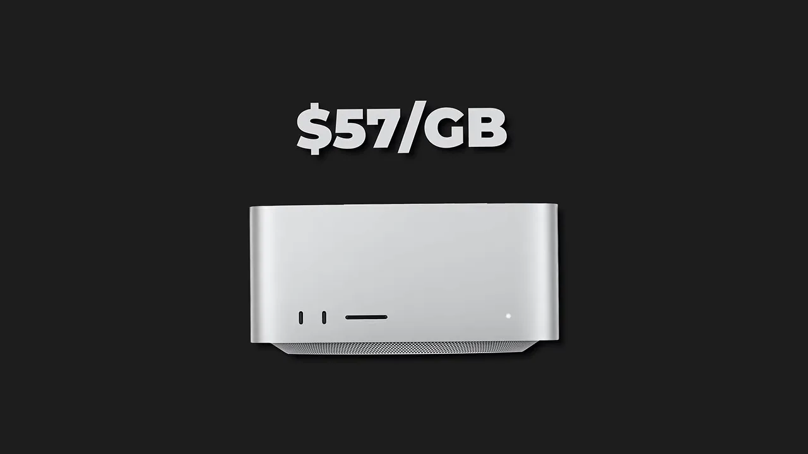
GB당 가격으로 보면 AMD 박스가 약 26달러, Spark와 GX10이 약 35달러, Apple 96GB 기본 구성은 약 57달러예요. 앞의 Spark 편에서는 Strix Halo를 11.70달러로 계산했는데, 그 사이 메모리 값이 올라 AMD 박스 가격 자체가 두 배 가까이 됐기 때문이에요. 비싼 대신 512GB를 이 크기로 파는 곳은 Apple뿐이에요. 희소성이 곧 웃돈이래요.
측정치를 모아 보면 한 가지가 뚜렷해요. 밀집 70B는 모든 상자에서 기어가요. Beelink GTR9 Pro는 약 5, Spark는 약 2.6토큰이에요. Apple이나 AMD의 문제가 아니라 대역폭의 벽이고, 이 벽을 의미 있게 뚫는 건 Apple의 1.2TB/s뿐이에요. DRAM 가격은 1분기에 대략 두 배가 되고 3분기에 또 올라서, 모든 상자가 출시 때보다 비싸졌어요. Apple의 4,000달러 메모리 업그레이드가 그걸로 용서되진 않지만, 설명은 된대요.
승자 하나가 아니라 일 세 가지
| 진영 | 가진 것 | 맞는 일 |
|---|---|---|
| NVIDIA·ASUS | 프리필 | 에이전트 코딩 |
| AMD·GMKtec·Framework | 싼 대용량 메모리 | MoE 모델. 대부분의 2026년 작업 |
| Apple | 모니터 아래 들어가는 상자에 512GB 통합 메모리 | 다른 곳에서 돈으로 살 수 없는 것. 가장 비싼 입장권이기도 해요 |
월 110달러와 구독료
처음 숫자로 돌아가요. Apple은 Ultra를 3년 동안 월 110.10달러에 리스해 줘요. 아래 화면처럼 기본 구성을 사서 36개월로 나누면 하드웨어 값은 월 약 153달러예요.
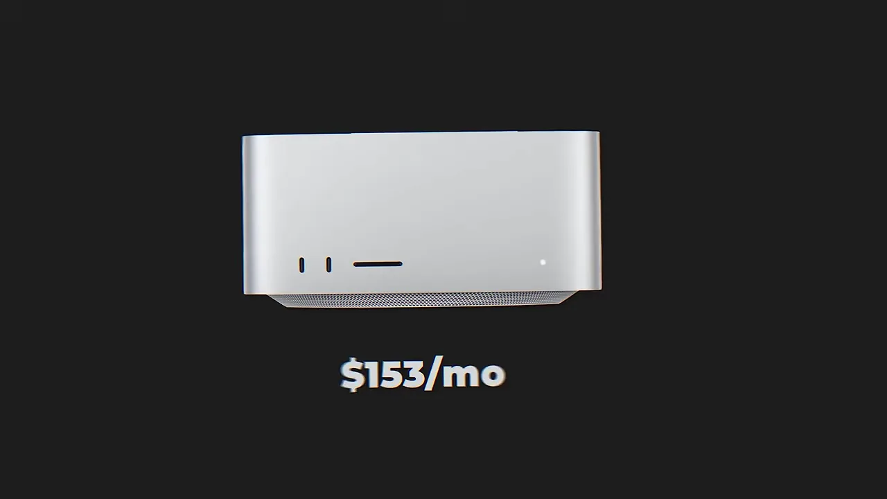
계산이 움직이는 건 전부 쌓을 때예요. Claude, Gemini, Grok, 영상 생성기, 음성 도구까지 얹으면 헤비 유저는 월 100달러를 쉽게 넘겨요. 그러면 리스 금액과 구독 더미가 같은 동네에 들어와요. 그래도 오늘 밤 끊을 수 있는 청구서를 몇 년 동안 값이 떨어지는 상자와 맞바꾸는 거고, 그 위에서 도는 로컬 모델은 좋지만 해지하려는 최상위 모델은 아니에요. '이 기계가 구독을 죽였다'는 말은 계산이 뒷받침하지 않는 일을 하고 있대요.
누구에게 맞을까요
- 로컬 AI가 뭔지 시험해 보고 싶거나 남들보다 먼저 옮겨 가고 싶다면, 가장 비싼 구성은 필요 없어요. AMD나 NVIDIA 박스, 아니면 소박한 Apple 구성을 고르래요. Apple은 중고값이 잘 유지돼서 나중에 되팔기도 쉬워요.
- AI 작업이 아주 적다면 필요 없어요. 멋있어서 돌리는 취미에 512GB는 필요 없대요.
- 기밀 고객 데이터나 NDA(Non-Disclosure Agreement)에 묶인 프로젝트를 다루는 전문가라면 계산이 뒤집혀요. 에이전시, 컨설턴트, 개발자, 변호사, 의료기관이 여기에 들어가요.
마지막 부류에게 이 상자의 상대는 20달러 구독이 아니라 '그 도구를 아예 쓸 수 없는 상황'이에요. 바이트 하나도 밖으로 보내지 않는 기계가 지금 있는 가장 깔끔한 답이래요. 그래도 일반 사용자에게 1만~2만 달러는 큰돈이에요. 발표자를 거슬리게 하는 건 가격이 아니라, Apple이 아래 보도자료 제목처럼 '온디바이스 AI를 위한 궁극의 데스크톱'이라고 부르면서 초당 토큰 수는 하나도 내지 않았다는 점이에요.
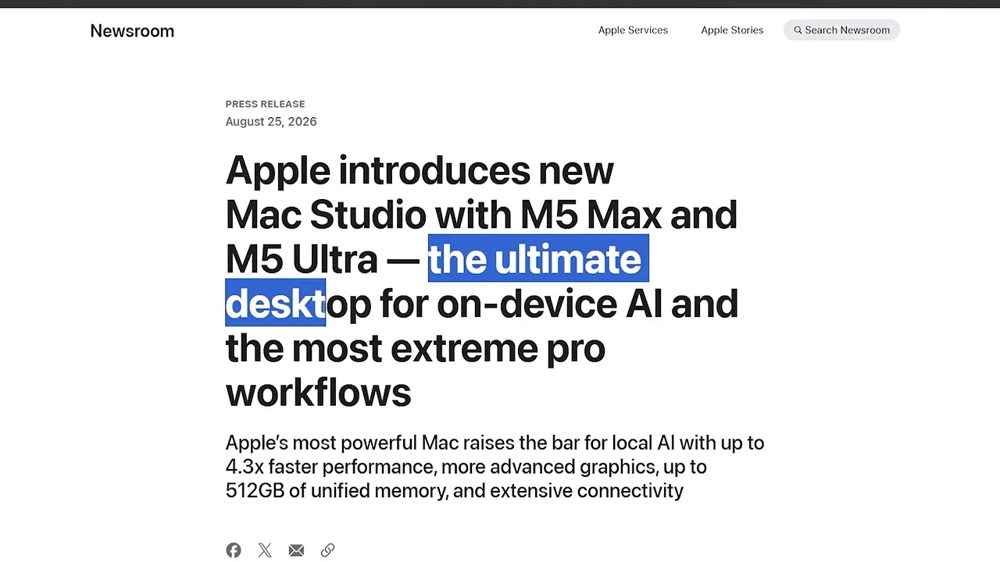